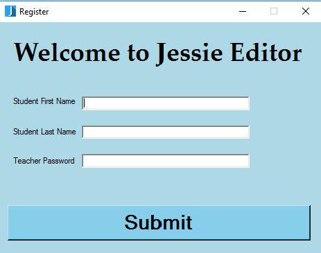

Jessie Editor Setup
Now that Jessie Editor is succefully installed, you can now set it up for the student's first time use.
Run Jessie Editor and a welcome screen will appear. Enter the students first and last name.
You will also have to enter a password which you will use to award the students points for
doing good work.

Click submit and Jessie Editor will now be ready for the students to use.
Back